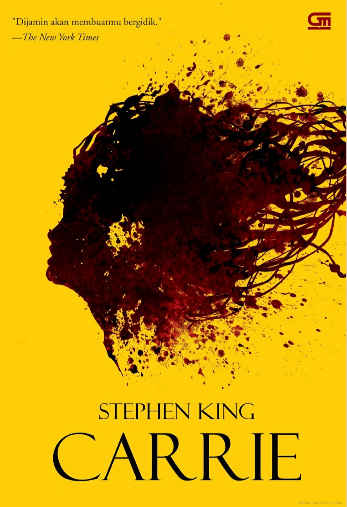
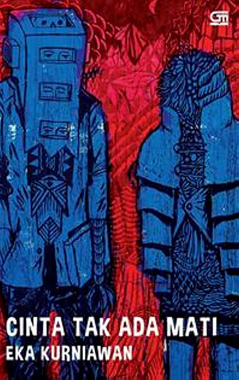
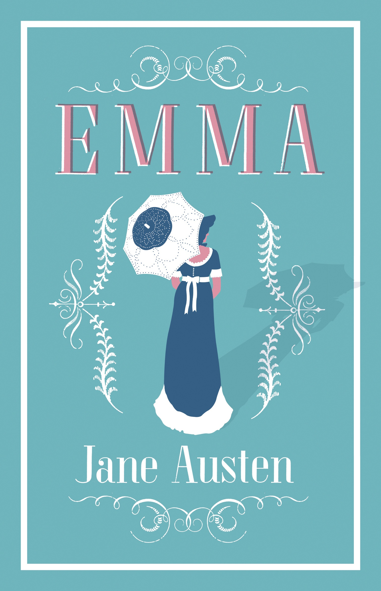
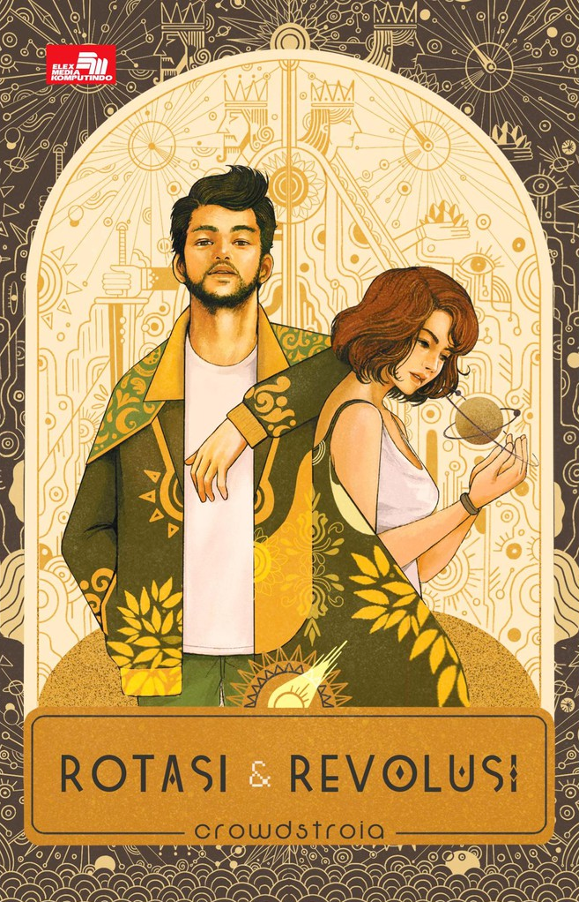
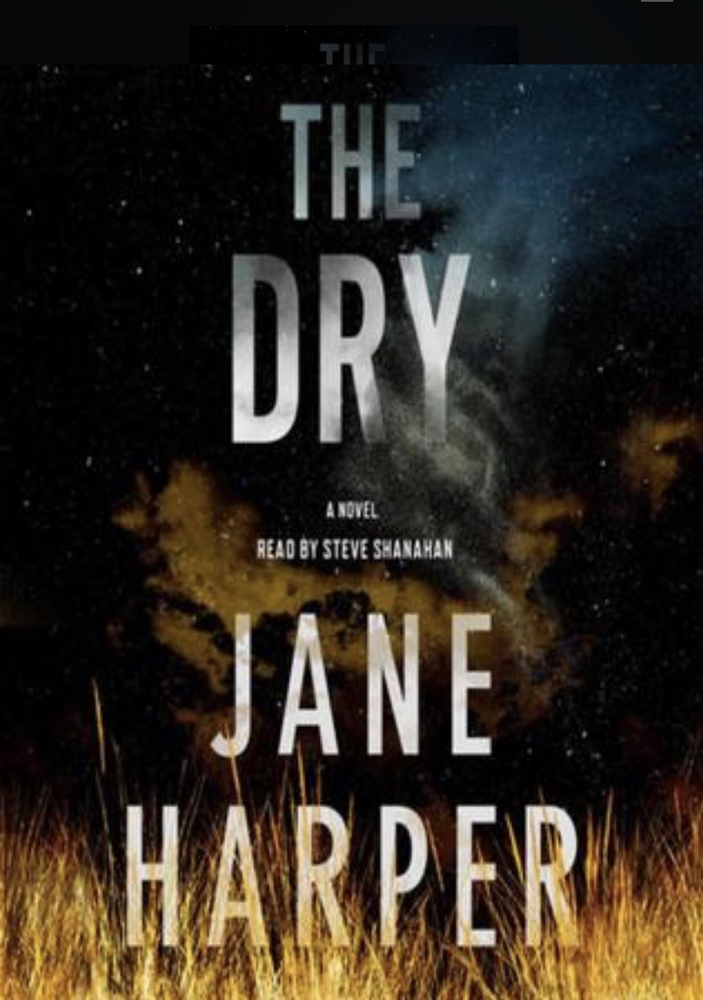

Home

Kata Bandung berasal dari kata bendung atau bendungan karena
terbendungnya sungai Citarum oleh lava Gunung Tangkuban Parahu yang
lalu membentuk telaga. Legenda yang diceritakan oleh orang-orang tua
di Bandung mengatakan bahwa nama Bandung diambil dari sebuah
kendaraan air yang terdiri dari dua perahu yang diikat berdampingan
yang disebut perahu bandung yang digunakan oleh Bupati Bandung, R.A.
Wiranatakusumah II, untuk melayari Ci Tarum dalam mencari tempat
kedudukan kabupaten yang baru untuk menggantikan ibu kota yang lama
di Dayeuhkolot.
Berdasarkan filosofi Sunda, kata Bandung juga berasal dari kalimat
Nga-Bandung-an Banda Indung, yang merupakan kalimat sakral dan luhur
karena mengandung nilai ajaran Sunda. Nga-Bandung-an artinya
menyaksikan atau bersaksi. Banda adalah segala sesuatu yang berada
di alam hidup yaitu di bumi dan atmosfer, baik makhluk hidup maupun
benda mati. Sinonim dari banda adalah harta. Indung berarti Ibu atau
Bumi, disebut juga sebagai Ibu Pertiwi tempat Banda berada.
Review Buku
Sejak dibukanya Jalan Tol Cipularang, kota Bandung telah menjadi
tujuan utama dalam menikmati liburan akhir pekan terutama dari
masyarakat yang berasal dari Jakarta sekitarnya. Selain menjadi
kota wisata belanja, kota Bandung juga dikenal dengan sejumlah
besar bangunan lama berarsitektur peninggalan Belanda.
Carrie
by Stephen King

Berada di jalur utama Bandung-Lembang, Farm House menjadi objek
wisata yang tidak pernah sepi pengunjung. Selain karena letaknya
strategis, kawasan ini juga menghadirkan nuansa wisata khas Eropa.
Semua itu diterapkan dalam bentuk spot swafoto Instagramable.
Cinta Tak Ada Mati
by Eka Kurniawan

Berada di jalur utama Bandung-Lembang, Farm House menjadi objek
wisata yang tidak pernah sepi pengunjung. Selain karena letaknya
strategis, kawasan ini juga menghadirkan nuansa wisata khas Eropa.
Semua itu diterapkan dalam bentuk spot swafoto Instagramable.
Emma
by Jane Austen

Berada di jalur utama Bandung-Lembang, Farm House menjadi objek
wisata yang tidak pernah sepi pengunjung. Selain karena letaknya
strategis, kawasan ini juga menghadirkan nuansa wisata khas Eropa.
Semua itu diterapkan dalam bentuk spot swafoto Instagramable.
Rotasi dan Revolusi
by Crowdstroia

Berada di jalur utama Bandung-Lembang, Farm House menjadi objek
wisata yang tidak pernah sepi pengunjung. Selain karena letaknya
strategis, kawasan ini juga menghadirkan nuansa wisata khas Eropa.
Semua itu diterapkan dalam bentuk spot swafoto Instagramable.
The Dry
by Jane Harper

Berada di jalur utama Bandung-Lembang, Farm House menjadi objek
wisata yang tidak pernah sepi pengunjung. Selain karena letaknya
strategis, kawasan ini juga menghadirkan nuansa wisata khas Eropa.
Semua itu diterapkan dalam bentuk spot swafoto Instagramable.